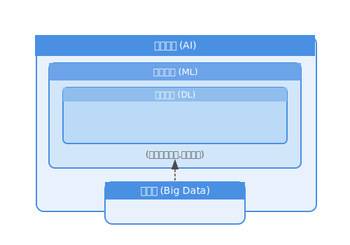
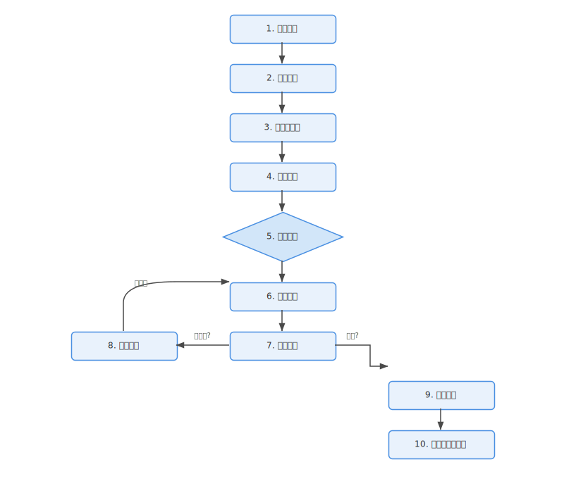

机器学习导论
学习目标：
- 理解机器学习的基本概念、分类。
- 了解机器学习在人工智能 (AI) 和大数据中的核心地位。
- 熟悉机器学习的一般流程。
1.1 什么是机器学习？
机器学习（Machine Learning, ML）是人工智能（Artificial Intelligence, AI）的一个重要分支，也是大数据时代从数据中提取价值、驱动智能决策的核心技术。简单来说，机器学习致力于研究计算机如何从数据中学习，并利用学习到的经验（模式或规律）来对新的、未见过的数据做出判断或预测。
与传统编程（程序员明确指定计算机执行每一步指令）不同，机器学习算法允许计算机自动从数据中学习规则，而无需显式编程。
“机器学习领域致力于回答这样一个问题：我们如何构建能够自动改进经验并利用经验指导决策的计算机程序?” —— Tom Mitchell (《机器学习》作者)
1.1.1 机器学习、人工智能与大数据的关系
- 人工智能 (AI): 是一个更广泛的领域，旨在创造能够模拟人类智能行为的机器。
- 机器学习 (ML): 是实现人工智能的一种主要方法。它使机器能够从数据中学习，而不是仅仅遵循预先编程的指令。
- 深度学习 (Deep Learning, DL): 是机器学习的一个子领域，它使用深层神经网络模型，在图像识别、自然语言处理等复杂任务中取得了巨大成功。
- 大数据 (Big Data): 为机器学习提供了丰富的”养料”。海量的数据使得机器学习模型能够学习到更复杂、更精确的模式。同时，机器学习也是分析和利用大数据价值的关键工具。
下图简要展示了它们之间的关系：
 (图 1.1: AI, ML, DL 与大数据的关系)
1.1.2 机器学习的重要性
在当今数据驱动的世界中，机器学习的应用无处不在，例如：
- 个性化推荐: 电商网站（如淘宝、京东）和流媒体服务（如Netflix、Spotify）使用机器学习来推荐您可能感兴趣的商品或内容。
- 图像识别: 手机相册自动分类照片、人脸识别解锁、医学影像分析等。
- 自然语言处理: 语音助手（如Siri、小爱同学）、机器翻译、垃圾邮件过滤、情感分析等。
- 金融风控: 信用卡欺诈检测、股票市场预测、信用评分。
- 医疗健康: 疾病诊断、药物研发、个性化医疗方案。
- 自动驾驶: 车辆感知环境、决策规划。
机器学习正在改变着各行各业，理解和掌握机器学习技术对于未来的数据科学家、分析师和工程师至关重要。
1.2 机器学习的分类
机器学习算法种类繁多，通常可以根据学习方式和任务类型将其分为以下几类：
1.2.1 监督学习 (Supervised Learning)
在监督学习中，算法从带有标签 (labeled data) 的训练数据中学习。这意味着每个训练样本都包含输入特征和一个期望的输出标签。算法的目标是学习一个从输入到输出的映射函数，以便能够对新的、未见过的输入数据做出准确的预测。
- 示例任务:
- 分类 (Classification): 预测离散的类别标签。例如，判断一封邮件是否是垃圾邮件（是/否），识别图片中的动物是猫还是狗。
- 回归 (Regression): 预测连续的数值。例如，预测房价、股票价格、明天的气温。
- 常用算法: 线性回归、逻辑回归、K近邻 (KNN)、支持向量机 (SVM)、决策树、随机森林、神经网络等。
我们将会在本书的 第二部分 详细学习监督学习。
1.2.2 无监督学习 (Unsupervised Learning)
在无监督学习中，算法从没有标签 (unlabeled data) 的训练数据中学习。算法的目标是发现数据中隐藏的结构、模式或关系。
- 示例任务:
- 聚类 (Clustering): 将相似的数据点分组成簇。例如，对客户进行细分，对新闻文章进行主题分组。
- 降维 (Dimensionality Reduction): 减少数据的特征数量，同时保留重要信息。例如，用于数据可视化或提高其他学习算法的效率。
- 关联规则挖掘 (Association Rule Mining): 发现数据项之间的有趣关联。例如，“购买了面包的顾客也倾向于购买牛奶”。
- 常用算法: K-Means聚类、DBSCAN、主成分分析 (PCA)、Apriori算法等。
我们将会在本书的 第三部分 详细学习无监督学习。
1.2.3 强化学习 (Reinforcement Learning)
在强化学习中，智能体 (agent) 通过与环境 (environment) 交互来学习。智能体在每个时间步观察环境的状态 (state)，选择一个动作 (action) 执行，并从环境中获得一个奖励 (reward) 或惩罚。智能体的目标是学习一个策略 (policy)，该策略能够最大化其在长期内获得的累积奖励。
- 核心概念: 智能体、环境、状态、动作、奖励、策略。
- 示例任务:
- 游戏AI: AlphaGo下围棋、训练机器人在游戏中获胜。
- 机器人控制: 训练机器人行走、抓取物体。
- 推荐系统: 根据用户反馈动态调整推荐策略。
- 资源管理: 优化数据中心的能源消耗。
- 常用算法: Q-Learning、SARSA、Policy Gradient、Actor-Critic方法等。
我们将会在本书的 第六部分 初步了解强化学习。
1.2.4 其他学习类型 (可选了解)
- 半监督学习 (Semi-supervised Learning): 训练数据中同时包含少量有标签数据和大量无标签数据。
- 自监督学习 (Self-supervised Learning): 从无标签数据中自动生成标签，然后进行监督学习，是当前研究的热点之一。
1.3 机器学习的一般流程
虽然不同的机器学习任务和算法有所差异，但一个典型的机器学习项目通常遵循以下步骤：
- 问题定义 (Problem Definition):
- 明确要解决的问题是什么？（例如，预测客户流失、识别欺诈交易）
- 确定问题的类型（分类、回归、聚类等）。
- 定义成功的衡量标准。
- 数据收集 (Data Collection):
- 收集与问题相关的数据。数据可以来自数据库、文件、API、网络爬虫等。
- 确保数据的质量和相关性。
- 数据预处理 (Data Preprocessing):
- 这是机器学习流程中非常关键且耗时的一步。
- 数据清洗: 处理缺失值、异常值、重复值。
- 数据转换: 将数据转换为适合机器学习算法的格式（例如，文本数据转换为数值表示）。
- 数据规范化/标准化: 将不同尺度的特征调整到相似的范围。
- 特征工程 (Feature Engineering):
- 从原始数据中创建新的、更能有效表达问题信息的特征。
- 特征选择: 选择与目标变量最相关的特征子集。
- 特征提取: 通过组合或转换现有特征来生成新特征。
- 好的特征工程能够显著提升模型性能。
- 模型选择 (Model Selection):
- 根据问题类型、数据特点和计算资源，选择合适的机器学习算法。
- 可能需要尝试多种不同的模型。
- 模型训练 (Model Training):
- 使用准备好的训练数据来训练选定的模型。
- 算法会根据训练数据调整其内部参数，以学习数据中的模式。
- 这个过程通常涉及优化算法，以最小化某个损失函数。
- 模型评估 (Model Evaluation):
- 使用未在训练中使用过的数据（测试数据或验证数据）来评估模型的性能。
- 选择合适的评估指标（例如，准确率、精确率、召回率、F1分数、均方误差等）。
- 判断模型是否存在过拟合或欠拟合。
- 模型调优 (Model Tuning / Hyperparameter Optimization):
- 根据评估结果，调整模型的超参数（在训练开始前设置的参数），以期获得更好的性能。
- 常用的方法有网格搜索、随机搜索、贝叶斯优化等。
- 模型部署 (Model Deployment):
- 将训练好的、性能满意的模型集成到实际应用中，使其能够对新的、真实世界的数据进行预测或决策。
- 模型监控与维护 (Model Monitoring and Maintenance):
- 在模型部署后，需要持续监控其性能，因为数据分布可能会随时间发生变化（概念漂移）。
- 根据需要重新训练或更新模型。
下图展示了这个通用流程：
 (图 1.2: 机器学习的一般流程)
1.4 本章小结
本章我们初步了解了机器学习的基本概念、其在人工智能和大数据生态中的位置、主要的学习类型（监督学习、无监督学习、强化学习）以及一个典型的机器学习项目所经历的通用流程。这些基础知识将为我们后续深入学习各个具体算法和技术打下坚实的基础。
在下一章中，我们将配置Python机器学习的开发环境，并回顾一些核心的Python库。
1.5 思考与练习
1.5.1 基础练习
- 名词解释: 请用自己的话解释以下术语：人工智能 (AI)、机器学习 (ML)、深度学习 (DL)、大数据、监督学习、无监督学习、强化学习。
- 分类判断: 对于以下场景，判断它们分别属于哪种主要的机器学习类型（监督学习、无监督学习、强化学习）？
- 根据房屋的面积、位置、房龄等特征预测其价格。
- 将新闻文章按照主题自动分类。
- 训练一个机器人通过走迷宫来找到出口。
- 识别图片中的物体是猫还是狗。
- 根据用户的购买历史，将用户划分为不同的群体。
- 流程排序: 请将机器学习的一般流程中的以下步骤进行正确排序：数据收集、模型训练、问题定义、特征工程、模型评估、数据预处理、模型部署。
1.5.2 扩展练习
- 案例分析: 选择一个你感兴趣的机器学习应用案例（例如，你手机上的某个App功能，或者某个行业新闻报道中提到的应用），分析它是如何利用机器学习解决问题的？它可能属于哪种学习类型？它可能面临哪些数据方面的挑战？
- 工具调研: 除了本书提到的学习类型，调研并简要描述一种其他的机器学习范式或子领域（例如，自监督学习、联邦学习、元学习等），并说明其主要特点和潜在应用。
1.5.3 推荐阅读
- 《机器学习》周志华 (西瓜书): 如果您想更深入地理解传统机器学习的理论基础，这本书是非常经典的中文教材。其第一章可以作为本章内容的良好补充。 (对应课程大纲教材)
- 《动手学深度学习》阿斯顿·张 等: 虽然主要关注深度学习，但其绪论部分对机器学习的概念也有很好的介绍。(对应课程大纲教材)
- Microsoft - ML for Beginners: (https://github.com/microsoft/ML-For-Beginners) 这是一个非常棒的开源课程，提供了很多实践案例和清晰的解释，可以作为本书的辅助材料。特别是其 “1-Introduction” 部分。
- 科普文章: 在网络上搜索诸如”人工智能、机器学习、深度学习的区别与联系”之类的科普文章，可以帮助您从不同角度巩固对这些核心概念的理解。